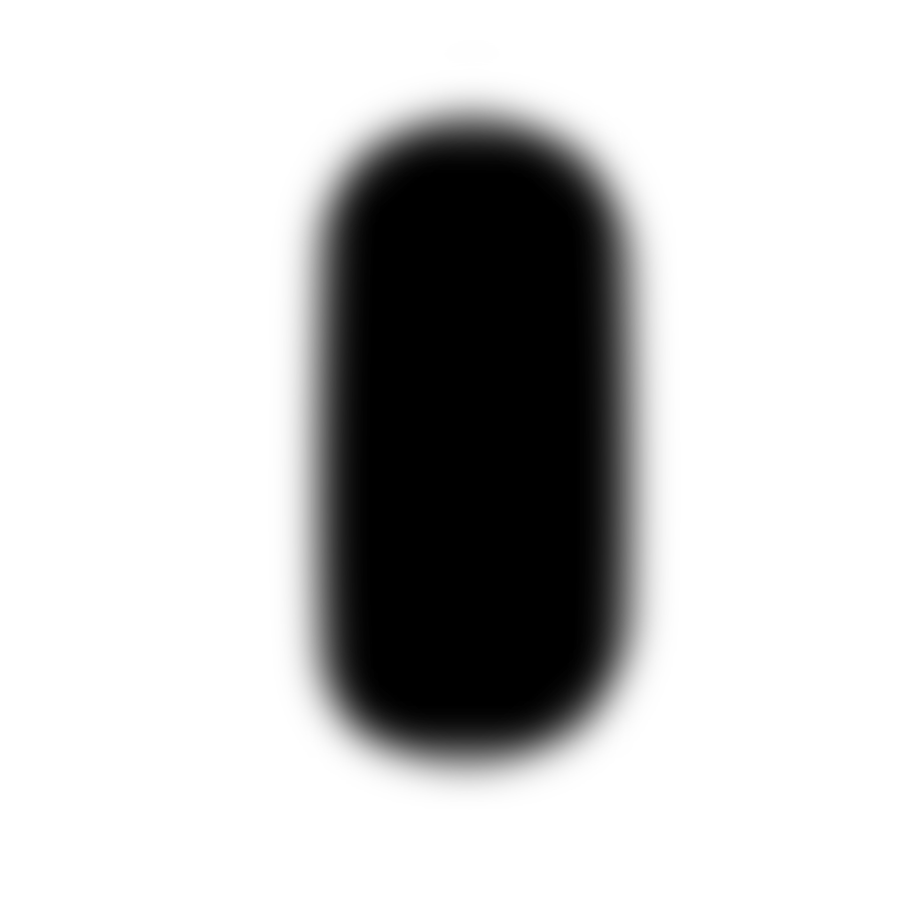
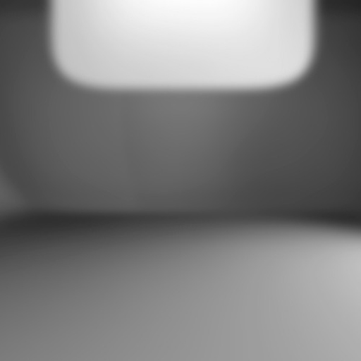

<!-- Copyright (c) 2020 8th Wall, Inc. -->
<!-- body.html is optional; elements will be added to your html body after app.js is loaded. -->

<a-scene
  xrextras-gesture-detector
  xrextras-almost-there
  xrextras-loading
  xrextras-runtime-error
  renderer="colorManagement: true"
  xrweb
>
  <!-- Asset definition -->
  <a-assets>
    <a-asset-item id="fiatModel" src="assets/models/fiat.glb"></a-asset-item>
    
    
    
    
    
    
    
    
    
    
    
  </a-assets>

  <!-- The raycaster will emit mouse events on scene objects specified with the cantap class -->
  <a-camera
    id="camera"
    position="0 8 18"
    raycaster="objects: .cantap"
    cursor="fuse: false; rayOrigin: mouse;"
  >
  </a-camera>

  <a-plane
    tap-place-cursor
    id="circleCar"
    rotation="-90 0 0"
    width="3"
    height="3"
    material="src: #circleCar; side: double; transparent: true;"
  >
  </a-plane>

  <a-entity
    light="
      type: directional;
      intensity: 0.8;
      shadowMapHeight:2048;
      shadowMapWidth:2048;
      shadowCameraTop: 10;
      target: #model;"
    xrextras-attach="target: model; offset: 1 15 3;"
    shadow
  >
  </a-entity>

  <a-light type="ambient" intensity="0.7"></a-light>

  <a-entity
    id="model"
    gltf-model="#fiatModel"
    class="cantap"
    xrextras-hold-drag
    xrextras-two-finger-rotate
    xrextras-pinch-scale
    scale="0.1 0.1 0.1"
    rotation="0 90 0"
    position="0 0 0"
    shadow="receive: false"
    visible="false"
    cubemap-realtime
    adjust-car
  >
    <a-plane
      id="shadow"
      rotation="-90 0 0"
      position="-5 -55 0"
      width="500"
      height="500"
      material="src: #shadowTexture; transparent: true; opacity: 0.8;"
    >
    </a-plane>
  </a-entity>

  <a-plane
    id="doorLockHotspot"
    class="cantap"
    width="2"
    height="2"
    material="src: #doorUnlockTexture; side: double; transparent: true;"
    visible="false"
  >
  </a-plane>

  <a-plane
    id="ground"
    class="cantap"
    rotation="-90 0 0"
    width="1000"
    height="1000"
    material="shader: shadow"
    shadow
  >
  </a-plane>
</a-scene>

<button id="tapToPlace" class="tap-to-place-button">tap to place</button>
